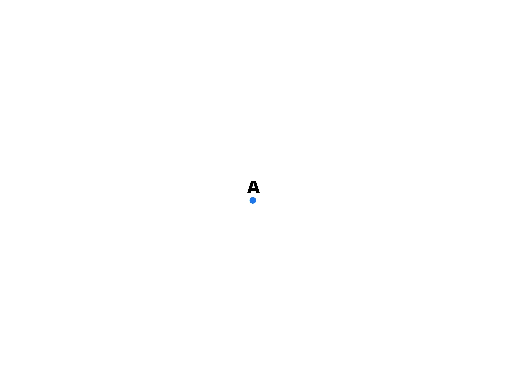
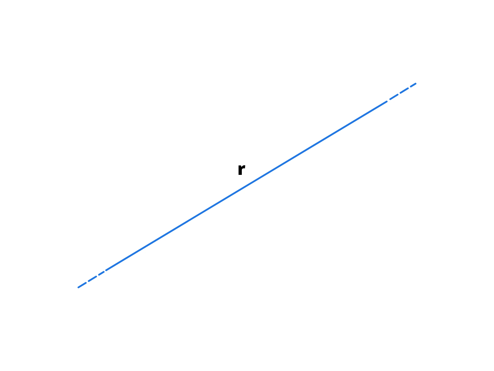
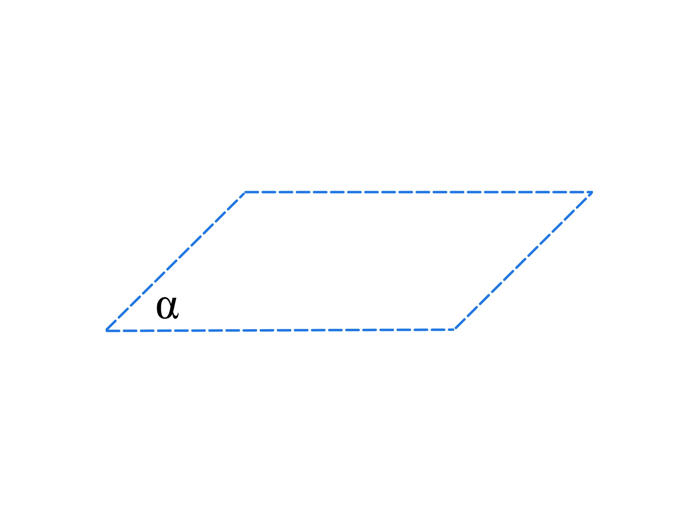
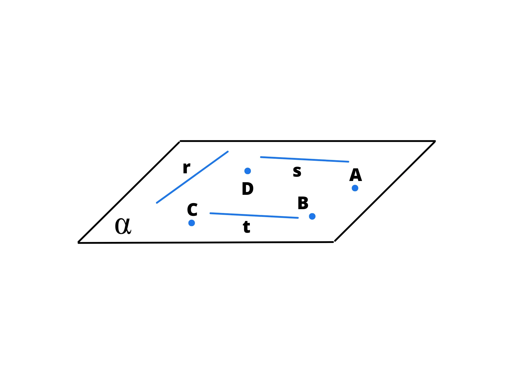
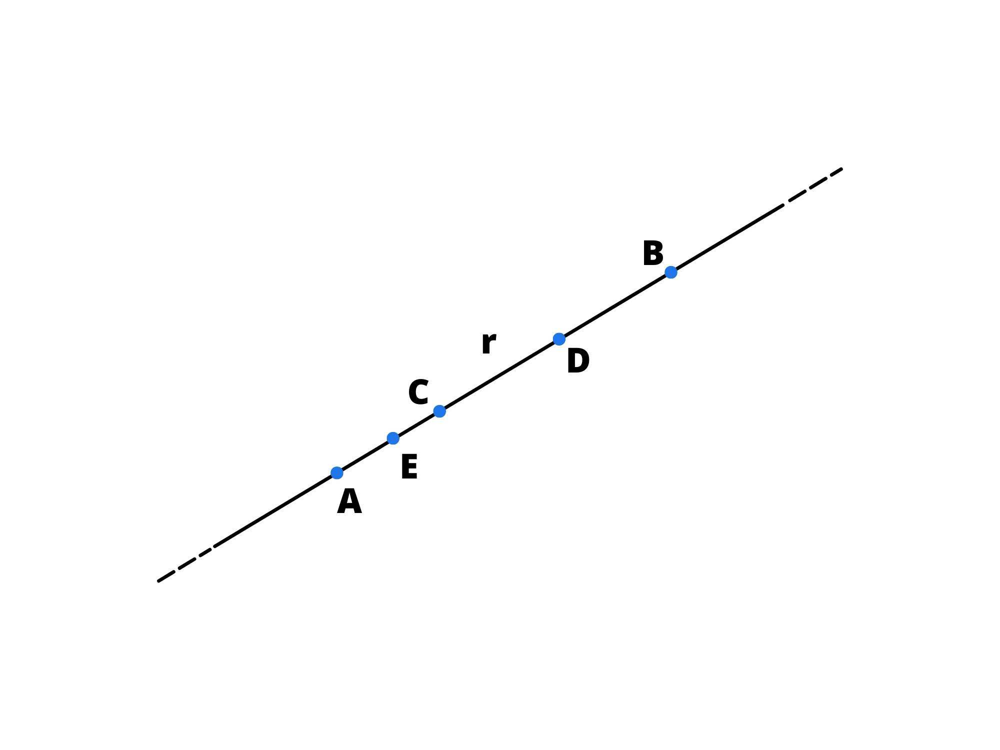
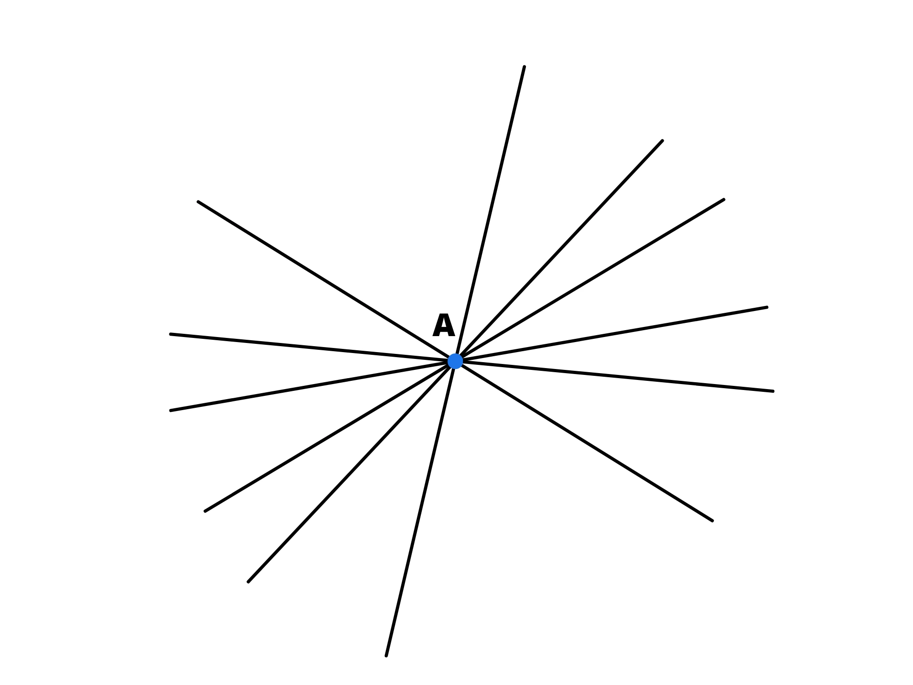
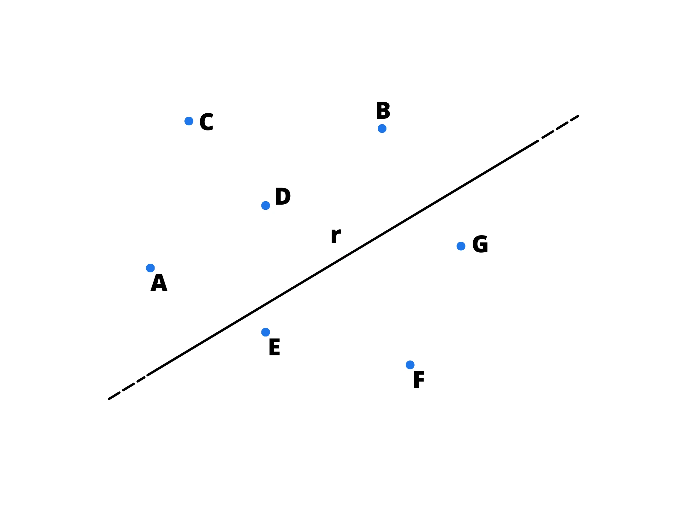
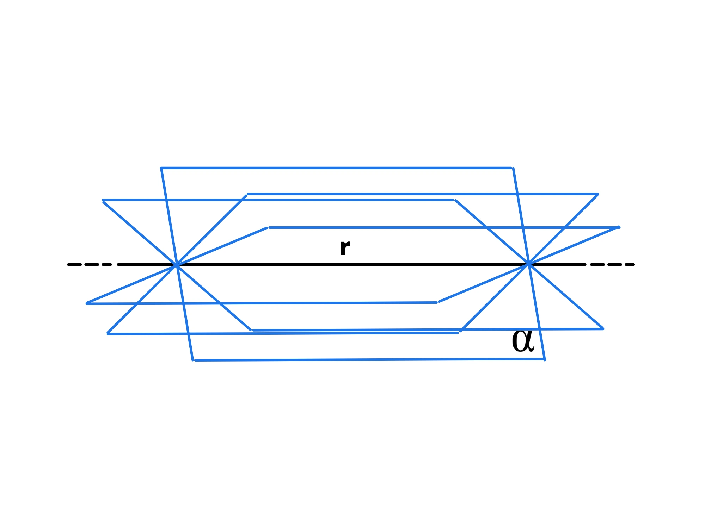
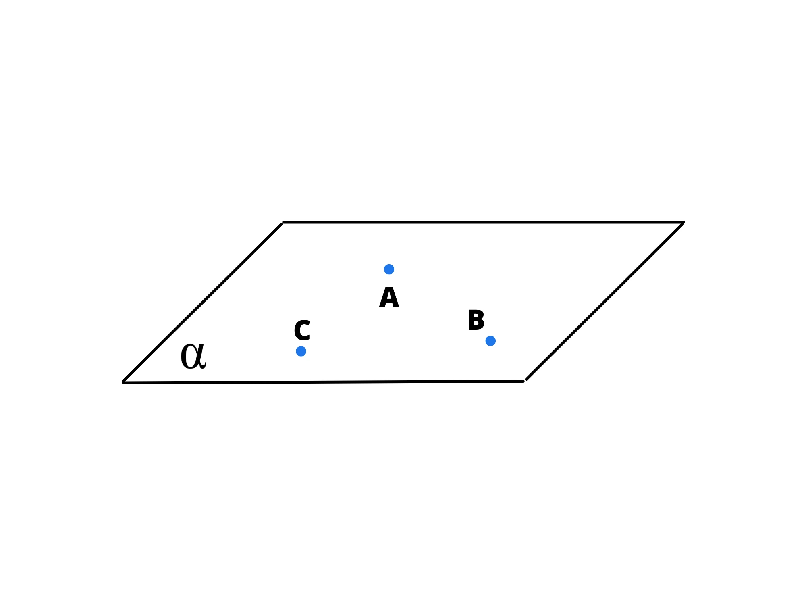
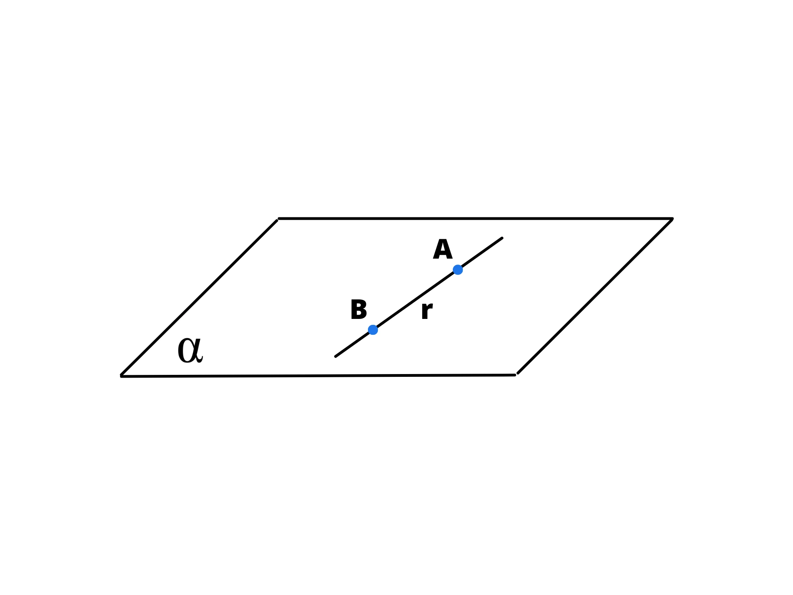

Enti geometrici fondamentali
Di seguito analizzeremo gli enti geometrici fondamentali.
Cos’è un ente geometrico?
Un ente geometrico fondamentale è, come dice la parola, un'entità di base della geometria euclidea. Sono il punto, la retta e il piano.
Il punto
Il punto non ha alcuna grandezza, ma solo una posizione. Si dice quindi che adimensionale, o che ha \(0\) dimensioni.
Viene solitamente indicato con una lettera maiuscola.
La retta
La retta è un insieme infinito e continuo di punti che hanno sempre la stessa direzione.
Si indica solitamente con la lettera minuscola.
Il piano
Se passiamo a due dimensioni aggiungiamo la larghezza alla lunghezza, otteniamo il piano. Siccome non possiamo disegnare un piano perché occuperebbe infinito spazio, come per la retta disegniamo solo un segmento, per il piano disegniamo un parallelogramma.
Il piano si indica solamente con la lettera minuscola dell'alfabeto greco.
Proprietà degli enti fondamentali
- Un piano contiene infiniti punti e rette. 
- Una retta contiene infiniti punti. 
- Per due punti distinti passa una e una sola retta.
- Per un punto passano infinite rette. 
- Esistono infiniti punti non appartenenti alla stessa retta. 
- Per una retta passano infiniti piani. 
- Per \(3\) punti non allineati passa uno e un solo piano. 
- Se almeno due punti di una retta appartengono a un piano, allora l'intera retta è contenuta nel piano. 

Talvolta, per far comprendere che la retta tende all'infinito, potrebbe essere richiesto di tratteggiarne gli estremi:
O di tratteggiare i bordi di un piano:
Bisogna notare che né punto, né la retta, né il piano esistono nel mondo reale, ma sono concetti astratti. Infatti, ci si può sforzare a fare un punto piccolo, sarà in realtà sempre un piccolo cerchio.